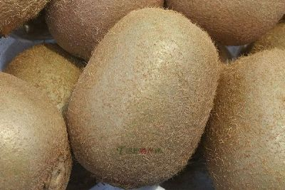
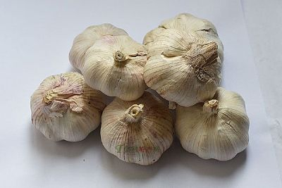

信阳毛尖茶是中国十大名茶之一，因其成品紧密如尖故名毛尖。信阳市的天云、云阳等山区山高雾重，水质极佳，出产的茶叶颜色深绿，叶片肥厚，品质上乘，再经过后期的精工细做，成品茶纯净清澈、香味持久，回味悠长，历史上曾被作为贡品献入宫中，有淮南第一茶之称。

金银花又名“忍冬”、“二花”。产地：中国河南密县。 成因：地处河南省中部，嵩山东麓。境内五指山区四季分明，雨量比较适中， 非常适宜金银花的生长。 特点：金银花为忍冬科多年生半常绿缠绕灌木，长可达九米，茎细，中空，多 分枝，皮棕褐色。叶对生，叶片卵形至长卵形，长三至八厘米，宽一至 三厘米。夏初开花，陆续开到九月，花成对生于叶腋，初开时呈银白色， 逐渐变成金黄色，黄白相映，有清香。其花蕾采回经烘干或晒干即为成 品。其花条长、青白色、无胡头、胡棒、色泽好、骨花硬、药质高。 功效：金银花性寒、味甘、无毒，很早就成为中国民间传统的清凉解毒良药。 南北朝陶宏景著《名医别录》中记述它有治疗“寒热邪肿”的功效。明代李时珍在《本草纲目》中说它能“治一切风湿及诸肿毒、疽疥癣、杨 梅恶疮、散热解毒。”现代药理研究证明，密银花含有黄酮类木犀草黄色， 葡萄甙，皂甙和含1%的环已六醇。对黄白色葡萄球菌、甲乙型溶血性链 球菌、伤寒杆菌、老贺氏痢疾杆菌、人型结核杆菌、肺炎双球菌等，均 有不同程度的抑制作用，是中医处方中常用的主药。用适量的密银花配 以蒲公英、野菊花、甘草，水煎服，可治痈肿疔毒；密银花和连翘、薄 荷、荆芥、甘草、大青叶、芦根，水煎服，能治温病初期、痘疹等症； 密银花与板兰根、黄连、白头翁和水煎服，治疗热毒疫痢、高烧神昏、 腹痛下坠、便下如鱼脑等症。银花泡茶，喝了能清热解毒，适口爽心。 
杞县大蒜已有一千多年的栽培历史。经过长期的精心培育，现已成为独具特色的土特产品，在国内外市场上享有盛誉，产品远销英、美、香港和东南亚等国家和地区。杞县大蒜的主要特点是个大瓣大、蒜肉洁白、鲜差不多爽脆、辛辣味香，尤以吃过生蒜后，口腔中不留异味而受到欢迎。杞县大蒜含有丰富的蛋白质、脂肪、糖、钙、磷、铁及维生素A、B、C、等多种营养物质，它不仅是人们喜爱的调味品，而且还有较高的药用价值，现代医学认为，大蒜生辛热、熟甘温、有小毒，具有杀虫除湿，温中消食，清热解毒，破恶血、止痛等功效，对治疗痛肿疗毒、水气肿满、腹泄痢疾，腹中冷痛等症均有疗效。杞且大蒜生食香辣可口，开胃提神，加入肉中可调味去腥，用大蒜腌制的糖蒜、咸蒜、绿蒜、什锦菜等都别个风味。现在，杞县已被中国粮油进出口公司选定为大蒜出口重点县。苏木大蒜国际市场的“超市蒜”、“礼品蒜”大部分来源于苏木，大蒜交易市场内拥有店铺500余家，年成产量11万吨，交易额1.2亿元，成为全国大蒜四大集散地之一，“全国大蒜产业十强乡(镇)”被誉为“大蒜之乡”。投资1800万元建造的30座冷库，可对2.8万吨大蒜进行保鲜储存，建成的22座蒜片加工厂可对2000吨大蒜进行深加工，年产优质蒜片500余吨。 
怀菊花，花、叶、茎皆可入药。古代医学认为，怀菊花得天地之清气，含金水之精英，饱经露霜、备受四气、善清上焦邪热、疏风解毒，清肝明目，安肠胃，调四肢，解渴消毒。久服利血气，轻身耐老，延年益寿。近代临床报道：用开水冲泡作茶饮，对高血压、头痛、失眠等症状有明显疗效。